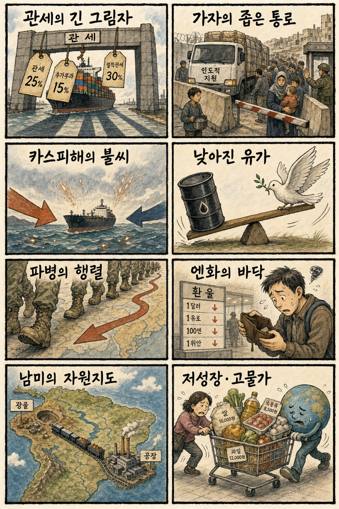
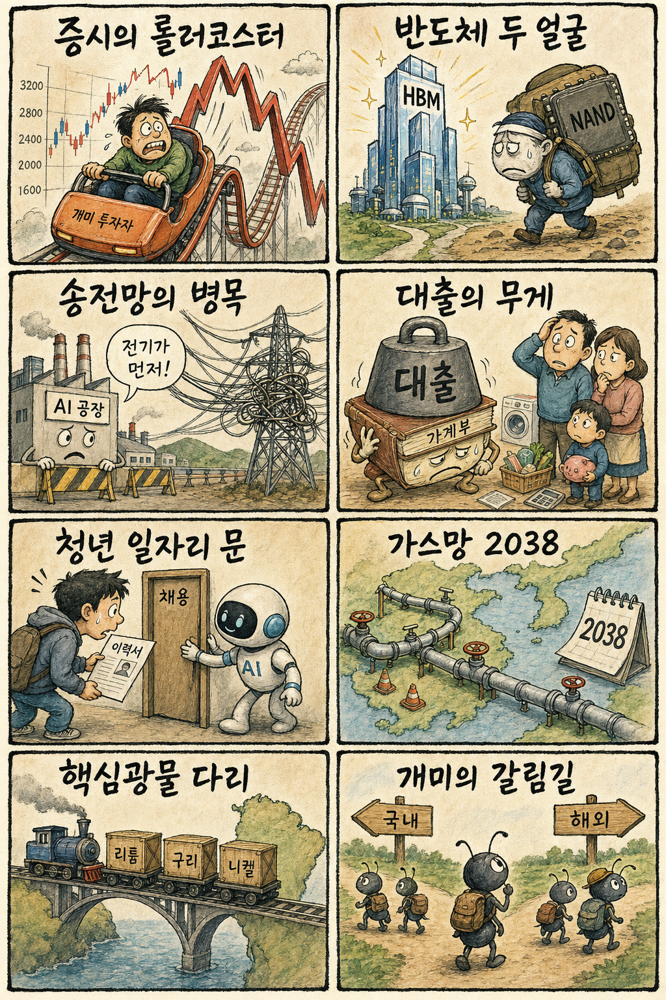

01
쇼피파이 11.54% 급등 — AI 방어력 평가와 증권사 상향
내용요약 126.88달러로 11.54% 상승했습니다. RBC의 AI 경쟁 방어력 평가와 월가의 투자의견·목표가 상향 보도가 매수세를 키웠습니다.
예상여파 전자상거래 소프트웨어에서도 AI가 비용이 아니라 전환율·구독 성장의 촉매로 평가받는지 확인할 기준입니다.
MORNING_BRIEFING_20260728
작성 시각: 2026-07-28 06:40 KST · 직전 미국 정규장과 2026-07-28 KST 당일 공개 기사 기준
미국 7월 27일 정규장은 다우 +0.51%, S&P 500 +0.02%, 나스닥 -0.18%로 혼조 마감했습니다. 유가 하락은 경기민감주를 받쳤지만 중국의 DUV 장비·메모리 공급 확대 우려가 반도체를 눌렀습니다. 한국장은 전일 반등 뒤 반도체 본주·ADR 전환 수급과 낸드 약세가 충돌할 가능성이 큽니다.
| 지수 | 종가 | 등락률 | 한국 증시 영향 |
|---|---|---|---|
| 다우존스 | 52,210.08 | 0.51% | 에너지 가격 완화와 경기민감주 방어가 한국 가치주 심리에 완충 |
| S&P 500 | 7,413.18 | 0.02% | 보합권으로 위험선호는 유지됐지만 방향성은 제한 |
| 나스닥 종합 | 24,932.08 | -0.18% | 중국 DUV·메모리 공급 우려가 국내 반도체에 단기 부담 |
다우는 0.51% 올랐지만 나스닥은 0.18% 내려 기술주 수급이 갈렸습니다.
중국 공급 확대 우려가 샌디스크 급락과 국내 낸드 부담으로 이어졌습니다.
중동 긴장 완화와 유가 하락은 운송·소비 비용에는 우호적입니다.
검증 표본과 수급 데이터가 기준에 못 미쳐 오늘 공식 추천은 내지 않습니다.
7월 27일 보고서는 종합점수·상승확률·손익비 기준을 충족한 공식 추천을 기록하지 않았고, 관심 연결종목만 제시했습니다. 이를 사후에 추천으로 바꾸지 않습니다.
| 종목 | 7/27 실제 시가 | 7/27 종가 | 시가→종가 |
|---|---|---|---|
| SK하이닉스 | 1,803,000원 | 1,816,000원 | +0.72% |
| HD현대일렉트릭 | 859,000원 | 797,000원 | -7.22% |
| 한화에어로스페이스 | 979,000원 | 899,000원 | -8.17% |
| 지수 | 종가 | 등락률 | 해석 |
|---|---|---|---|
| 다우존스 | 52,210.08 | 0.51% | 에너지 가격 완화와 경기민감주 방어가 한국 가치주 심리에 완충 |
| S&P 500 | 7,413.18 | 0.02% | 보합권으로 위험선호는 유지됐지만 방향성은 제한 |
| 나스닥 종합 | 24,932.08 | -0.18% | 중국 DUV·메모리 공급 우려가 국내 반도체에 단기 부담 |
저유가 수혜 운송·소비, 고용서비스, 전자상거래 소프트웨어, 가스 인프라
낸드·범용 메모리, 중국 경쟁 노출 반도체, 고평가 바이오, 대출 민감 부동산
내용요약 126.88달러로 11.54% 상승했습니다. RBC의 AI 경쟁 방어력 평가와 월가의 투자의견·목표가 상향 보도가 매수세를 키웠습니다.
예상여파 전자상거래 소프트웨어에서도 AI가 비용이 아니라 전환율·구독 성장의 촉매로 평가받는지 확인할 기준입니다.
내용요약 39.74달러로 12.61% 올랐습니다. BMO가 채용시장 회복 전망을 근거로 투자등급을 높였다는 보도가 촉매가 됐습니다.
예상여파 AI 감원 우려 속에서도 전문인력 채용 회복 신호가 확인되면 인력서비스 업종의 실적 바닥 기대가 커질 수 있습니다.
내용요약 94.53달러로 12.30% 상승했습니다. 2분기 실적을 앞두고 판매 모멘텀과 매장 확장을 반영한 목표가 상향 보도가 나왔습니다.
예상여파 소비 둔화 우려보다 점유율 회복 기대가 앞섰지만 실적에서 주문과 마진이 뒷받침돼야 상승이 지속될 수 있습니다.
내용요약 19.27달러로 13.28% 내렸습니다. 최고경영자의 갑작스러운 사임과 카빅티 관련 우려를 반영한 목표가 하향 보도가 겹쳤습니다.
예상여파 바이오주는 경영진 공백과 핵심 제품 전망 변화에 민감해 후속 선임과 판매지표 확인 전 변동성이 이어질 수 있습니다.
내용요약 1,278.23달러로 11.02% 하락했습니다. 중국 CXMT 상장과 메모리 공급 확대 우려, 실적 전 경계가 반도체 매도를 키웠습니다.
예상여파 낸드·범용 메모리 가격 경쟁 우려가 국내 메모리와 장비주에도 단기 부담으로 전이될 수 있습니다.
다우 상승과 유가 하락은 경기민감·운송 업종에 완충이지만 나스닥 약세와 샌디스크 급락은 국내 메모리 심리에 부담입니다. SK하이닉스 본주·ADR 전환은 해외 접근성을 높이는 한편 초기 차익거래 변동성을 만들 수 있습니다. 장 초반 반도체 추격보다 외국인 현·선물, ADR 가격차, 낸드 관련 종목의 저점 방어를 확인하는 대응이 우선입니다.
오늘은 추천 없음 — 현금 관망
전일까지의 외국인·기관 수급, 컨센서스 변화, 과거 유사 조건 30건 이상의 보정 표본을 동시에 확보하지 못해 75점·상승확률 60%·손익비 1.5 기준을 검증할 수 없습니다. 숫자를 임의로 채우지 않습니다.
관심 연결종목 SK하이닉스(본주·ADR 전환), 삼성SDS(기업 AI 풀스택), 한국가스공사(장기 가스망 확충)는 뉴스 연결만 관찰하며 매수 추천이 아닙니다. 모두 장 초반 급등 시 추격매수 금지입니다.
본주·ADR 가격차와 외국인 현·선물 방향을 봅니다.
CXMT 공급 확대 우려가 낸드·장비주로 번지는지 확인합니다.
유가 하락이 원화와 운송·화학 업종에 주는 영향을 점검합니다.
거시건전성 부담금의 대상과 금융권 비용 전가 여부를 봅니다.
핵심 요약: AI 경쟁은 모델 성능을 넘어 인재, 보안 표준, 전력망과 메모리 공급망으로 확장됐습니다. 국내에는 기업용 AI 수주 기회와 중국 메모리 추격이라는 기회·위험이 동시에 들어옵니다.
내용요약 AI 데이터센터의 전력 수요가 시시각각 크게 흔들려 가스발전 등 기존 공급수단만으로는 대응이 어렵다는 진단입니다.
예상여파 송전망·저장장치·수요반응과 안정적 기저전원을 묶은 투자가 데이터센터 입지와 운영비를 좌우할 수 있습니다.
내용요약 세계적 수학자를 포함한 대학 연구 인력이 오픈AI 등 기업으로 이동하며 AI 인재 확보 경쟁이 학계까지 확산됐습니다.
예상여파 기초연구와 상용화 인력의 경계가 흐려져 대학·기업의 공동연구, 보상체계와 인재 유출 논쟁이 커질 수 있습니다.
내용요약 삼성SDS가 클로드 계열 모델부터 국산 NPU까지 연결하는 기업용 AI 풀스택 전략을 강화한다는 보도입니다.
예상여파 기업 고객은 모델 선택권과 보안·비용 최적화를 중시하게 되고, 구축형 AI의 실제 수주가 경쟁력을 가를 전망입니다.
내용요약 엔비디아가 마이크로소프트·IBM 등과 AI 보안 협력을 출범시켰고 오픈AI는 참여하지 않았다는 보도입니다.
예상여파 AI 모델과 인프라의 보안 표준을 둘러싼 연합 경쟁이 조달 기준과 기업용 AI 도입 속도에 영향을 줄 수 있습니다.
내용요약 중국 메모리 업체가 범용 D램을 넘어 HBM까지 추격하면서 한국 기업의 기술 격차 유지가 과제로 부각됐습니다.
예상여파 가격 경쟁은 범용 제품 수익성을 압박하고, HBM·패키징·차세대 메모리의 연구개발 속도가 장기 점유율을 좌우할 수 있습니다.
핵심 요약: 관세가 저성장·고물가 위험을 키우는 가운데 가자 안정화군, 카스피해 선박 공격, 북러 파병설이 지정학적 긴장을 이어갑니다. 반면 이란 공습 중단에 따른 유가 하락은 비용 압력에 단기 완충을 제공합니다.
내용요약 미국의 새 관세정책이 교역비용을 높여 세계 성장률을 낮추고 물가 압력을 오래 끌 수 있다는 분석입니다.
예상여파 수출기업의 원가·가격전가 부담과 각국의 통화정책 딜레마가 커져 금융시장 변동성이 확대될 수 있습니다.
내용요약 이스라엘이 미국과의 회담을 앞두고 가자지구 국제안정화군 배치를 서두른다는 보도입니다.
예상여파 배치 방식과 당사자 동의 여부가 휴전 이행, 인도지원 통로와 전후 통치 논의의 핵심 쟁점이 될 수 있습니다.
내용요약 우크라이나가 러시아 지원 군사화물을 운반했다며 카스피해의 이란 상선을 공격했다는 보도입니다.
예상여파 전쟁 위험이 흑해를 넘어 카스피해 물류와 이란·러시아 협력으로 번지면 에너지·해운 보험료가 흔들릴 수 있습니다.
내용요약 북한이 러시아 지원을 위해 병력을 추가 파견할 수 있다는 관측과 국제 제재의 한계가 제기됐습니다.
예상여파 북러 군사협력의 대가와 기술 이전 우려가 커지며 한반도 안보와 대북 제재 공조에 부담이 될 수 있습니다.
내용요약 미국이 이란 공습을 중단하면서 중동의 즉각적 공급 차질 우려가 완화돼 국제유가가 하락했다는 보도입니다.
예상여파 에너지 비용과 물가 부담에는 완충이지만 긴장 재점화 여부에 따라 항공·화학·정유 업종의 방향이 갈릴 수 있습니다.

핵심 요약: 국내 시장은 반도체 본주·ADR 전환과 HBM 강세 기대, 낸드 약세 우려가 맞섭니다. 가계대출 규제, 장기 가스망 확충, 브라질과의 핵심광물·우주항공 협력이 금융·에너지·공급망 정책의 새 변수가 됐습니다.
내용요약 SK하이닉스 본주와 미국 ADR 간 전환이 허용되면서 국내외 가격 차와 수급 이동 가능성이 주목받고 있습니다.
예상여파 차익거래와 해외 접근성 확대가 거래량을 키울 수 있지만 초기에는 전환 물량에 따른 변동성도 커질 수 있습니다.
내용요약 HBM 수요는 견조하지만 낸드 업황 부담이 남아 있어 반도체주의 반등 조건을 구분해야 한다는 분석입니다.
예상여파 제품별 이익 기여도와 중국 공급 확대를 확인하지 않은 업종 전체 추격매수는 위험하며 종목 차별화가 커질 수 있습니다.
내용요약 고액 주택담보대출 등에 추가 부담금을 부과하는 거시건전성 정책의 효과와 부작용이 논의되고 있습니다.
예상여파 가계대출 증가를 낮출 수 있지만 실수요자의 조달비용과 금융권 대출 구성에도 변화가 생길 수 있습니다.
내용요약 정부가 2038년까지 저장용량과 주배관을 늘리는 천연가스 공급망 확충 계획을 내놨습니다.
예상여파 에너지 안보와 수요 변동 대응력은 높아질 수 있고 저장·배관·건설 관련 장기 발주가 구체화될지 주목됩니다.
내용요약 한국과 브라질이 핵심광물·우주항공 협력을 넓히고 방산공동위원회를 출범시키기로 했다는 보도입니다.
예상여파 원료 조달 다변화와 공동개발이 실제 계약으로 이어지면 배터리소재·항공우주·방산 공급망의 선택지가 넓어질 수 있습니다.
